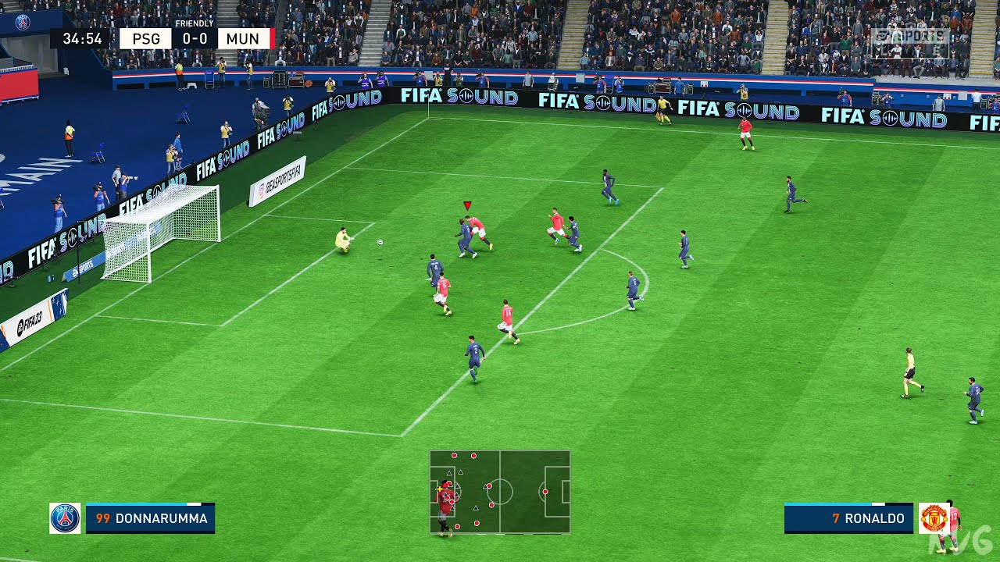
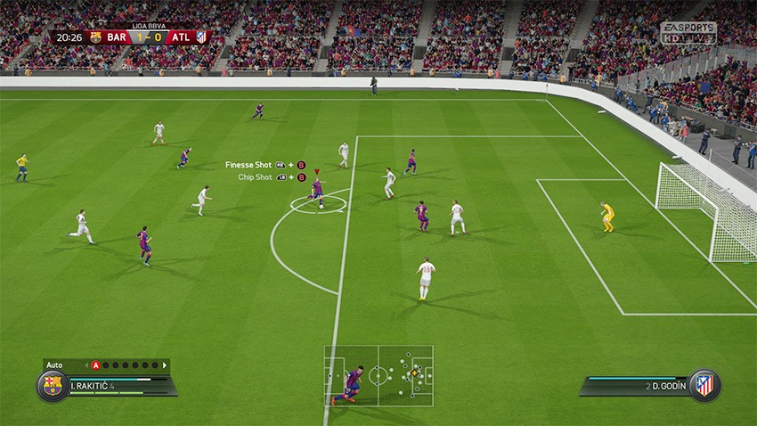
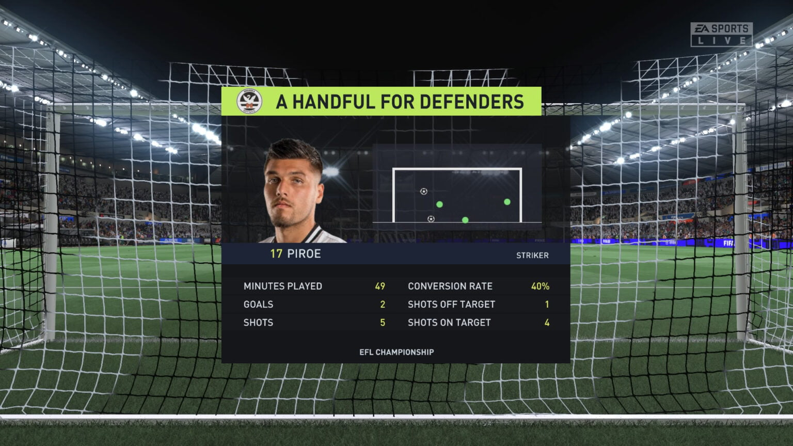

Game Features
FIFA offers dynamic match experience with HyperMotion technology (on supported consoles), realistic ball physics, and advanced AI behavior. Key features include Ultimate Team, Career Mode, Volta Football, and online multiplayer. Every edition adds improved player likeness, stadium atmosphere, and commentary depth.


